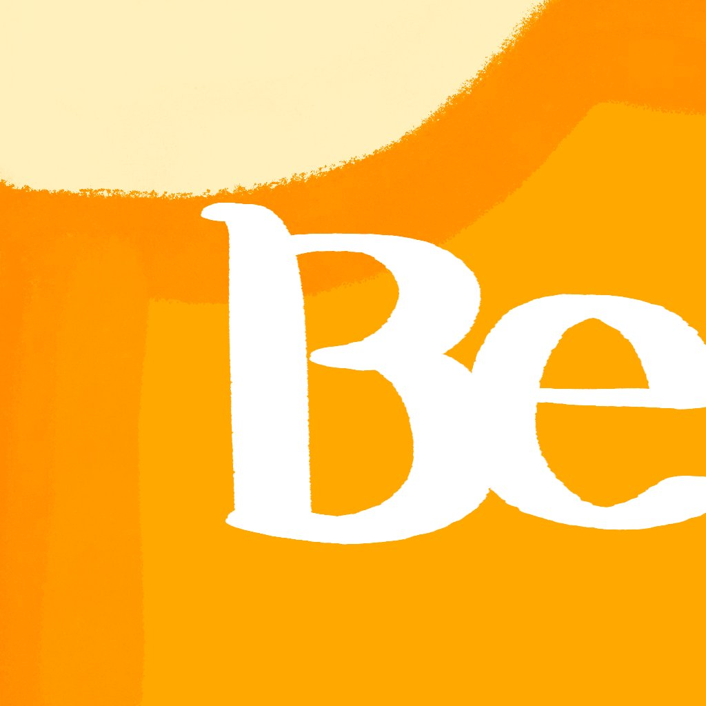

Independent App Studio — Est. 2026
Slowmorn is an independent app studio. We don't chase what's loud or fast — we keep our footing, hold to who we are, and build only what we can stand behind.
A good tool isn't loud. It stays quietly at your side, and does exactly its part when the moment calls for it.
"Slowmorn" is a posture — staying unhurried while the world rushes, keeping our shape while the noise pulls. We'd rather make something that lasts than something that trends.
01
Only an idea given enough time hardens into something real. We treat patience as part of the craft, not a delay in it.
02
Trends are loud and short-lived. We'd rather be quietly consistent — recognizably ourselves across everything we make.
03
We don't ship much. What we do ship, we carry all the way to the last pixel.

If something here resonates,
we'd love to hear from you.